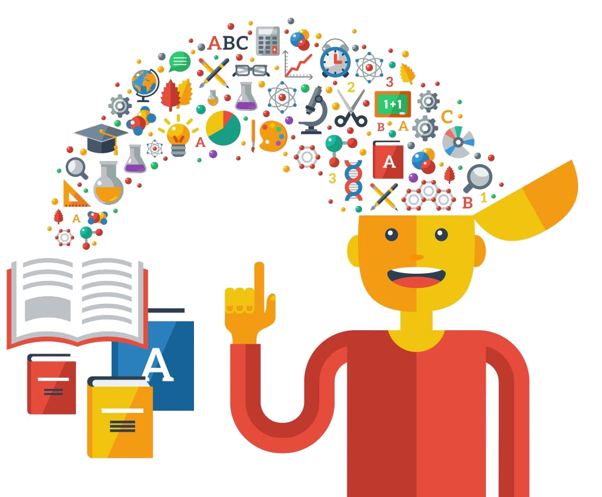

This is where you tell the story of your brand. Iconic brands such
as Disney and Coca-Cola
have long realized the power of their brand
story to build a connection with their audience.
Companies like
Apple possess brand stories that are legendary in their status.
What’s in a story, though? How does the story develop authenticity?
More to the point, how does such
a story create that trusting feeling
that customers crave?
BRAND VISION Let’s express who you are, what is your mission, what is unique selling point of your business to increase reliability as well as impress customer


Joud Ismail ( Senior Coder )
Maximilian Trinkaus ( Senior Designer )
Walid Fachri ( Senior Project-Manager )